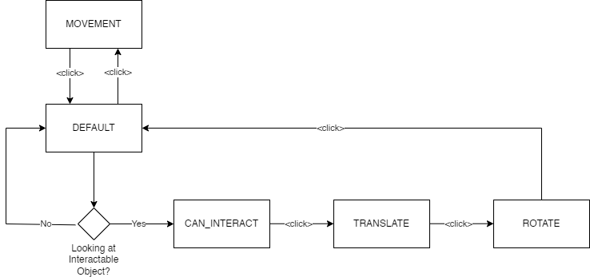
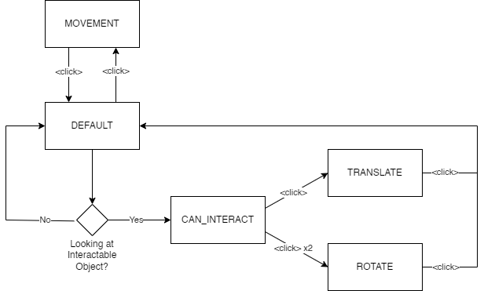

Foreword
The interaction techniques are bad. So bad, in fact, that I decided to split the project in two: The parkour, with only the movement, and the “Testing-Level”, which I repurposed to the “Interaction-Testing-Level”, where the interaction technique can be experimented upon. The reasons for this are many, but it mainly boils down to the interaction being so bad and slow that it severely hampers the flow of the parkour, and the interaction just plain not working how I want it to, mainly due to me not having enough time until the deadline of the project to reflect on my initial implementation and iterate upon it (like I have done with the locomotion technique).
Thus, the following interaction techniques, as well as the blog posts themselves will likely not be of the same quality as everything that came before. You have been warned.
Translation
That being said, how do we actually move things with only our neck. To even begin answer that question, we need to solve a different question: How do we even interact with an object in the first place?
Interaction
As of now, the program only manages two states: stationary and moving. A user simply switches between these states using a single button on a controller. Note that this button needn’t neccessarily be on a controller, it could be a foot pedal, something clenched between your teeth, or even just a microphone that records audio, and the application realizing when you yell “BAP”.
Still, how do we introduce more states without significantly increasing the amount of thinking, or physical actions, a user needs to take to both switch between stationary, movement, translation, and - as will be discussed later - rotation modes? One simple approach is to limit entering the interaction modes - translation and rotation - when actually looking at an interactable object which is relatively close to the player. This is simple enough. Just tag an object as interactable, and when the user presses the button whilst in stationary mode, enter translation mode instead of the movement mode. If we now define the “player-can-interact”-state as it’s own state, this leaves us with a total of five states that need to be managed:
- DEFAULT (Stationary)
- DEFAULT_CAN_INTERACT
- MOVEMENT
- INTERACT_TRANSLATE
- INTERACT_ROTATE
But how do we switch between the two interaction modes? One option, and my first approach, would be to just move through the interaction modes incrementally when the button is pressed.
|

|
|---|
| Initial State Diagram: When issuing another input whilst in the translation state, the rotation state is entered. It is not possible to exit translation without entering the rotation state. |
This, however, has one major drawback: forcing the rotation state after the translation state would frequently mess up rotation, if a user wants to adjust the translation of an object again after already positioning and rotating it once before. Due to this, I revised the interaction technique to account for - in this case - “double-clicks”.
|

|
|---|
| Revised State Diagram: We trade the simplicitly of only working with single-clicks for the ability to enter the interaction modes separately from one another. |
This technically breaks one of my prior requirements for this project - being only reliant on one, singular external input to manage any state. However, this is dependent on the actual input technique used. For instance, when using speech recognition as input, we could simply define different words or noises to enter states independently (“BLEH” to translate, “BLUGH” to rotate or similar). Speaking of…
Scriptable Objects, my beloved!
Guess what I used to implement the player state manager? That’s right, it’s the return of the scriptable objects. In theory, this would allow me to create multiple state managers, and swap them at runtime. For instance, I could switch between button input and speech recognition dependent on the situation and the needs/limitations of the user. I also had to implement my own crappy “Clicker-Counter” to count clicks in a short timeframe, to actually detect double clicks, as unfortunately, Unity has no in-build support for this functionality outside of UI-Elements.
What’s next?
In the next chapter, the implementation of the translation technique will be presented and discussed, before we move on to the rotation technique.